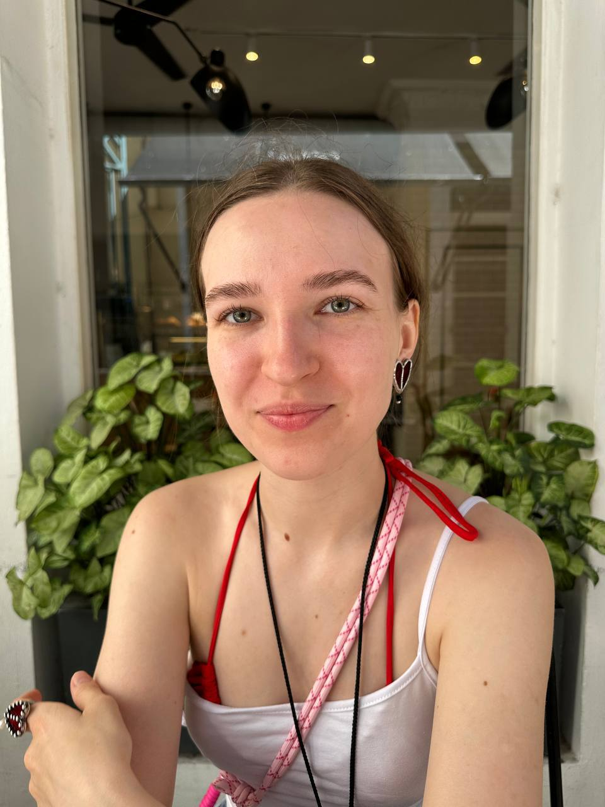
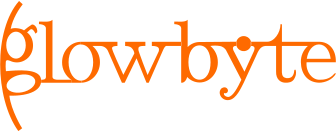

Языки и разработка
SQL (продвинутый), Python, YQL, Bash; интеграция с внешними REST API (обработка лимитов, повторные запросы), процедуры и функции на стороне БД (PostgreSQL), оптимизация SQL-запросов
Data Engineer
Удалённо · готова к релокации

Люблю работать с данными, процессами, системами и людьми. Работала как с маленькими данными, так и с очень большими (сотни миллионов событий в день) на протяжении 5 лет. Умею быстро внедряться в процессы команды, изучать новое самостоятельно, быть проактивной, а также не замыкаться только на своей работе, но и видеть процессы вокруг себя. Не боюсь изучать новое и быть самостоятельной: построила стартапу питон-пайплайн из API озона и вайлдберрис в Clickhouse. Не оставляю результат не проверенными - автоматизирую сверки, делаю мониторинги и алерты качества, умею находить и анализировать причину багов/потерь/расхождений. Всегда думаю о пользователях и пользе, которую я приношу, когда работаю с данными.
Нажми на компанию, чтобы узнать больше
SQL (продвинутый), Python, YQL, Bash; интеграция с внешними REST API (обработка лимитов, повторные запросы), процедуры и функции на стороне БД (PostgreSQL), оптимизация SQL-запросов
Greenplum, ClickHouse, PostgreSQL, Oracle, YTsaurus; Yandex Cloud, Docker, Linux, Git / GitHub
Apache Airflow, Apache NiFi, Nirvana, Yandex Cloud Functions; ежедневные и инкрементальные загрузки, загрузка исторических данных
Разработка пайплайнов и витрин, SCD Type 2, предагрегация, data-контракты и спецификации пайплайнов
Мониторинг и алертинг пайплайнов, метрики качества данных, сверка с источниками, анализ первопричин, аудит пайплайнов; DataLens, Superset
Согласование изменений с командами-поставщиками и потребителями данных, консультирование коллег из смежных команд, наставничество и обучение, подготовка спецификаций и документации
Руководство миграцией данных в нескольких доменах, координация команды разработчиков (оценка, сроки, распределение нагрузки), ведение бэклога и сбор требований
Анализ бизнес-логики и первопричин расхождений данных, самостоятельное ведение задач от API до дашборда, работа в сжатые сроки и ориентация на измеримый результат
Углубляю Python, изучаю как работает современный стек (Iceberg, S3, kafka, spark) и погружаюсь в ML
Пет-проекты
Стриминг данных о городских велосипедах Осло в реальном времени (Python, Kafka, Spark) с анимированной картой движения велосипедов (анимация — вайбкодинг с GPT)
Самостоятельно проектировать пайплайны от источника до потребителя, выбирать и интегрировать технологии; развиваться в streaming и инфраструктуре данных для ML
Инженер данных
Октябрь 2025 - август 2026
Анализ расхождений и развитие витрин по счетам и транзакциям; согласование изменений с поставщиками и потребителями данных
Инженер данных · фриланс, part-time
Март - июль 2026
Самостоятельно построила цепочку API → Python → ClickHouse → DataLens с загрузкой три раза в день. Настроила мониторинги с алертами для отслеживания ошибок и отладки
Аналитик качества данных
Ноябрь 2023 - июль 2025
Аналитика качества событийных логов: метрики потерь, поиск ошибок в обработке и мониторинг. Обнаружение инцидентов за сутки вместо нескольких дней

04Разработчик данных
Июль 2021 - ноябрь 2023
Банковские проекты: ежедневный ETL на Airflow / NiFi, SCD Type 2 в PostgreSQL, обработка данных для AML и REST API
Играю в покер. Побывала в 5 казино в 3 странах мира. Пока в плюсе :) Мой план Б, если не получится в дата-инженерии
Учусь взаимодействовать с нейросетями: сейчас пробую генерировать картинки и делать мультики
Мечтаю досмотреть «Ван-Пис». Сейчас 45/1180 серий